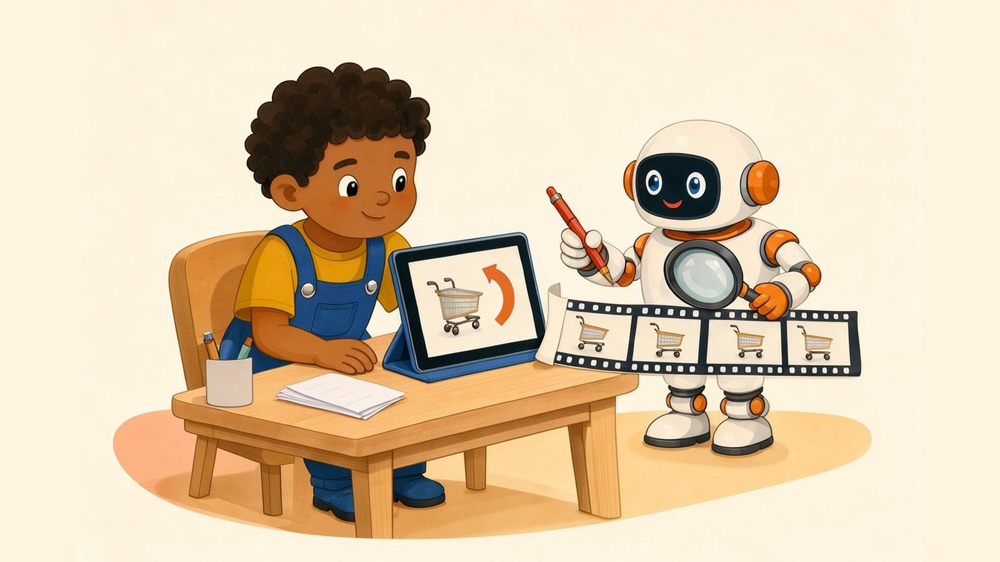
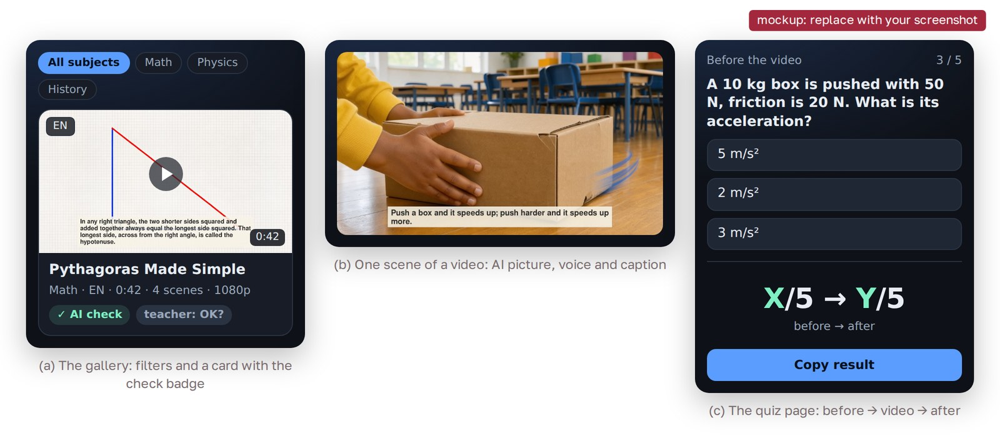

Can AI-made 1-minute videos teach a school topic correctly?

In one sentence: our app turns one topic line or a teacher's PDF into a 1-minute explainer video in Russian or English, and an AI check reads every script and stops it before a video with a mistake is made.
The problem
A student who missed a lesson often looks for a short video, but a good video takes a teacher hours to make. A language model can write the script in seconds, but it can also write a wrong number with full confidence. Teachers have their own materials, and an AI video must not add facts that are not in them.
How it works
The app uses only the class models on the class server: a chat model (DeepSeek-V4.1-Flash), an image model, a voice model and a speech recognition model. The check acts as “a strict school textbook editor”: it checks the facts, every arithmetic result and the formulas. If the check says no, the app makes no video. In PDF mode the app reads the PDF text with pypdf and the model must use only its facts. ffmpeg builds a 1080p video. On 27 October we had 71 videos (37 in Russian, 33 in English, 1 early test) in 7 subjects, 26 to 80 seconds long (median 48 s).
Results
Is the AI check right? We wrote 10 test scripts: 5 with one planted mistake and 5 correct ones. A planted mistake that the check stops is caught; a correct script that it stops is a false alarm.
| Test script | Should | First run | After change |
|---|---|---|---|
| 1.99² = 3.96 (right: 3.9601) | stop | X | X |
| 24 million km² = 2.4 billion football fields (right: 3.4) | stop | X | X |
| 40 m in 8 s “at a calm walk” (5 m/s is a run) | stop | X | X |
| 6² + 8² = 100, so c = 12 (right: 10) | stop | X | X |
| Water boils at 50 °C at sea level (right: 100 °C) | stop | X | X |
| 5 correct scripts | pass | X | X |
| Caught (of 5) / false alarms (of 5) | X / X | X / X |
Our tests with people:
| Test | Result |
|---|---|
| A teacher checks 10 videos that passed the AI check: mistakes found | X (X of 10 videos OK) |
| 6 classmates, quiz before → after one video (guessing: 1.25 of 5) | X of 5 → X of 5 |
| AI check during our batches (25–26 Oct) | 36 of 67 scripts stopped |
| Time per video (36 videos, before the check) | 67 to 127 s, median 105 s |
X = not measured yet.
The check already found real mistakes in our scripts, for example 1.99² = 3.96 in a Russian script about limits. But it also stopped correct scripts: for the independence of Kazakhstan it reported 2026 − 1991 = 35 as a problem and in the same line said that it is correct. [After the tests: which mistake did the check miss, and did the scores go up after the video?]

Limitations and ethics
The same model writes and checks the script, so it can miss its own mistakes, and the check reads only the text, not the pictures. Only one teacher checked only 10 videos, and the AI check had only 10 test scripts. The classmates did the same questions twice, so a part of the gain can come from the first quiz, not from the video.
The teacher and the classmates were volunteers; we write only scores and no names. The pictures and voices are made by AI models; no real person's face or voice is in them. Only videos that passed the AI check are on the public page.
Cite
@misc{diar2026videos,
title = {Can AI-made 1-minute videos teach a school topic correctly?
An app that turns a topic or a teacher's PDF into a checked
explainer video in Russian and English},
author = {Diar},
note = {FRP 2026, ISSAI, Nazarbayev University},
year = {2026}
}